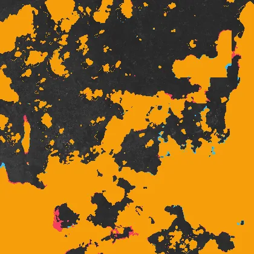
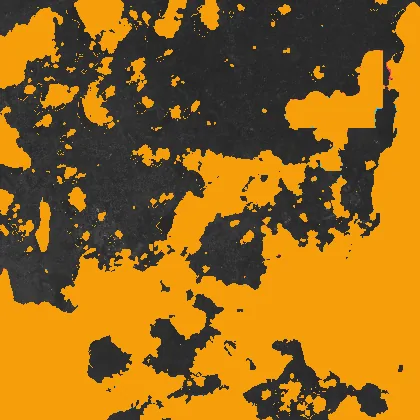
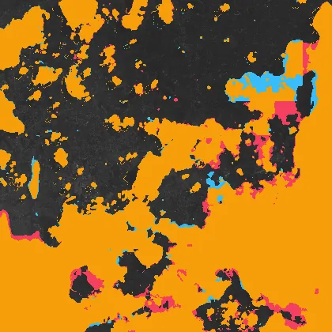
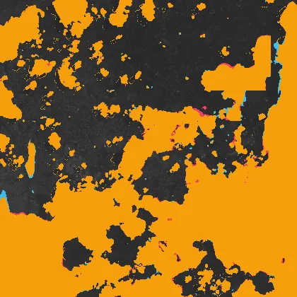
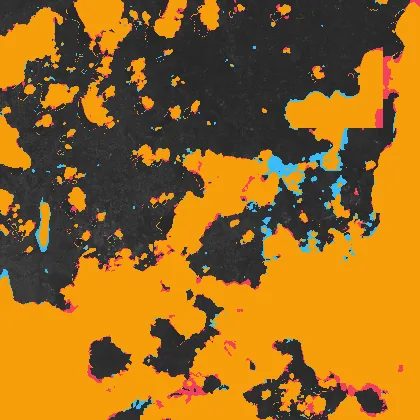
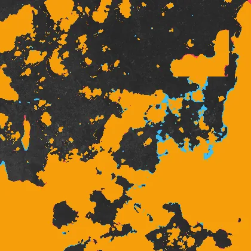
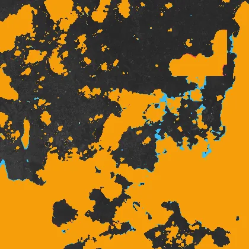

Benchmark / Use cases / Cloud mask / Results / T36NVF-20190510
T36NVF-20190510
Compression ratio and cloud mask
Each point is one level of a codec, named when you point at it, on this sample.
GeoZL PIVCOGeoZL PFORJPEG XLgeorvq
Change in cloud mask
The result from compressed data at each level.cloud on bothlostnew
GeoZL PIVCO
 quant-geozl-med-pivco-rms-tau5, RMSE 4.9
quant-geozl-med-pivco-rms-tau5, RMSE 4.9
3.6× · cloud_iou +0.997quant-geozl-med-pivco-rms-tau10, RMSE 9.52
4.5× · cloud_iou +0.995quant-geozl-med-pivco-rms-tau20, RMSE 19.9
6.2× · cloud_iou +0.989
quant-geozl-med-pivco-rms-tau40, RMSE 39.5
8.6× · cloud_iou +0.976 quant-geozl-med-pivco-rms-tau80, RMSE 79.8
quant-geozl-med-pivco-rms-tau80, RMSE 79.8
11.1× · cloud_iou +0.901GeoZL PFOR

quant-geozl-planar-pfor-rms-tau5, RMSE 4.9
3.2× · cloud_iou +0.997 quant-geozl-planar-pfor-rms-tau10, RMSE 9.52
quant-geozl-planar-pfor-rms-tau10, RMSE 9.52
3.9× · cloud_iou +0.995 quant-geozl-planar-pfor-rms-tau20, RMSE 19.9
quant-geozl-planar-pfor-rms-tau20, RMSE 19.9
4.9× · cloud_iou +0.989 quant-geozl-planar-pfor-rms-tau40, RMSE 39.5
quant-geozl-planar-pfor-rms-tau40, RMSE 39.5
6.1× · cloud_iou +0.976
quant-geozl-planar-pfor-rms-tau80, RMSE 79.8
7.6× · cloud_iou +0.901JPEG XL
jpegxl-distance-tau5, RMSE 4.91
3.6× · cloud_iou +0.999jpegxl-distance-tau10, RMSE 9.82
4.8× · cloud_iou +0.999jpegxl-distance-tau20, RMSE 19.7
7.2× · cloud_iou +0.997jpegxl-distance-tau40, RMSE 39.8
13.0× · cloud_iou +0.992
jpegxl-distance-tau80, RMSE 79.5
36.5× · cloud_iou +0.975 georvq

georvq-s2-v1-rung8-0, RMSE 204
287.3× · cloud_iou +0.918georvq-s2-v1-rung8-1, RMSE 143
132.9× · cloud_iou +0.942
georvq-s2-v1-rung8-2, RMSE 113
86.5× · cloud_iou +0.958georvq-s2-v1-rung8-3, RMSE 96.9
64.1× · cloud_iou +0.962georvq-s2-v1-rung8-4, RMSE 87.2
50.9× · cloud_iou +0.966georvq-s2-v1-rung8-5, RMSE 80.4
42.2× · cloud_iou +0.968georvq-s2-v1-rung8-6, RMSE 75.3
36.1× · cloud_iou +0.969
georvq-s2-v1-rung8-7, RMSE 71.3
31.5× · cloud_iou +0.969georvq-s2-v1-rung8-8, RMSE 68.3
27.9× · cloud_iou +0.969